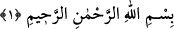
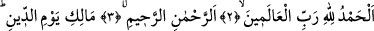
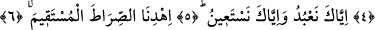
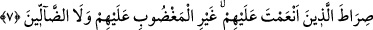

1. FÂTİHA SÛRESİ
1. Rahmân ve Rahîm olan Allah’ın adıyla:
2. Hamd, âlemlerin Rabbi Allah’a mahsûstur.
3. O Rahmân ve Rahîm’dir.
4. Din Gününün sahibidir.
5. Ancak Sana kulluk eder ve yalnız Senden yardım dileriz.
6. Bizi doğru yola eriştir.
7. Nimete erdirdiğin kimselerin yoluna; gazaba uğrayanların, ya da sapıtanların
yoluna değil.
Bu sûreye “Fâtiha” adının verilmesinin hikmetleri:
1. Mushaf onunla başladığı, Kur’ân okumaya, ilim öğrenmeye ve namaza onunla
girildiği için; çünkü Fâtiha “açan” demektir.
2. Her söze hamdele ile başlandığı için,
3. İlk nâzil olan sûre olduğu için,
4. Allah Teâlâ’nın Levh-i Mahfûz’da yazdığı ilk söz olduğu için,
5. Dünyâda ulvî gayelerin, âhırette cennet kapılarının anahtarı olduğu için,
6. Kitâb-ı ilâhî’nin gizli hazîneleri onunla ortaya çıktığı için; çünkü Fâtiha, ilâhî
hitâbın inceliklerini ihtivâ eden hazînelerin anahtarıdır. Kur’ân’ın bütün incelikleri
ehline onunla münkeşif olur. Fâtiha’nın mânâlarını bilene müteşâbih âyetlerin kilitli
kapıları açılır. Fâtiha’nın aydınlığında müteşâbihlerin nûrlarından derleme imkânı hâsıl
olur.
Fâtiha’ya Ümmü’l-Kur’ân da denilmiştir. Ümm, bir şeyin aslı, temeli ve anası
demektir. Kur’ân’ın ana hedefi şu dört şeydir: a) Ulûhiyyet b) Nübüvvet c) Âhıret d)
Kazâ ve Kaderin Allah’dan olduğunu isbât.
Fâtiha’daki “Hamd âlemlerin Rabbına âittir” âyeti, ulûhiyyetin ikrârıdır. “Din
gününün sahibidir” sözü, âhırete delâlet eder. “Ancak Sana kulluk eder ve ancak
Senden yardım dileriz” âyeti, kader konusunda Cebriyye ve Kaderiyye gibi sapık
fırkaların görüşünü nefy ederek her şeyin Allah’ın takdiriyle olduğunu isbât eder.